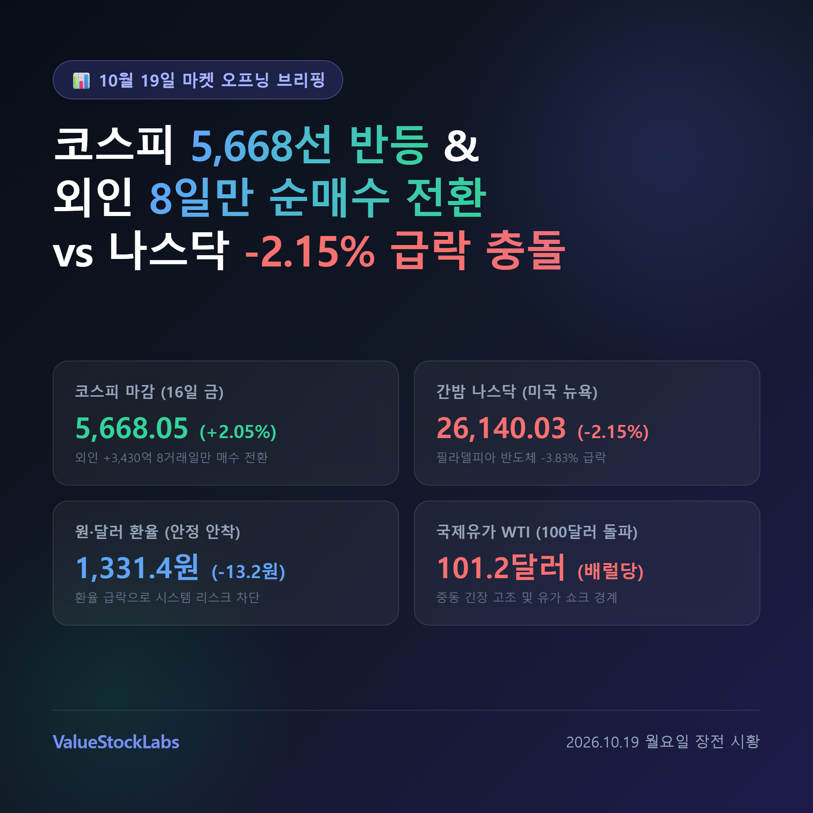
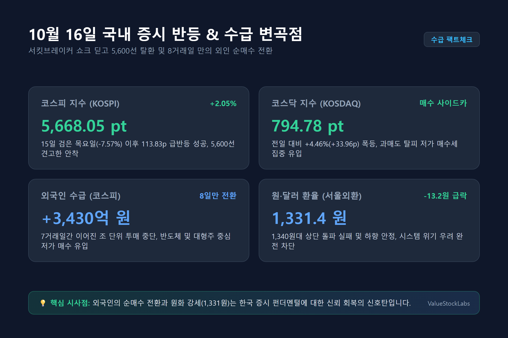
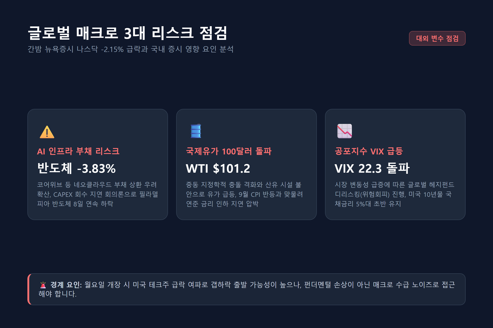
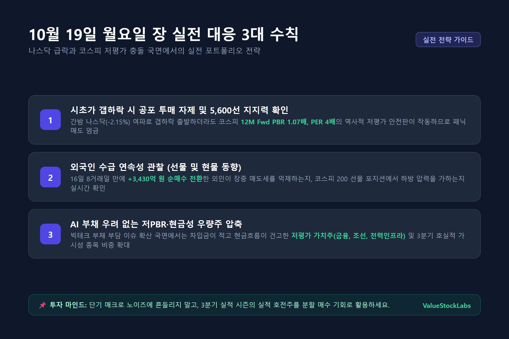

▲ [그림 1] 10월 19일 마켓 오프닝 브리핑 대표 인포그래픽
1. 10월 16일 국내 증시 마감 요약과 외국인 수급 변곡점
지난 10월 15일 코스피가 -7.57% 폭락하며 양대 시장에 서킷브레이커(CB)가 발동되었던 '검은 목요일'의 극심한 공포를 딛고, 10월 16일(금) 국내 증시는 안도 랠리와 함께 강력한 기술적 반등에 성공했습니다.
코스피 지수는 전 거래일 대비 +113.83포인트(+2.05%) 반등한 5,668.05로 거래를 마치며 5,600선 안착을 확인했습니다. 코스닥 지수 역시 +33.96포인트(+4.46%) 폭등한 794.78을 기록했으며, 장중에는 폭발적으로 쏟아진 매수 주문으로 인해 프로그램 매수호가 일시효력정지(매수 사이드카)가 발동되기도 했습니다.

▲ [그림 2] 10월 16일 국내 증시 반등 및 외국인 수급 변곡점
이번 반등에서 가장 결정적인 수급 시그널은 외국인 투자자의 귀환입니다. 7거래일 연속 조 단위 매도 폭탄을 쏟아내며 지수 하락을 주도했던 외국인이 16일 코스피 시장에서 3,430억 원 순매수로 전환하며 8거래일 만에 매수 우위로 돌아섰습니다.
| 시장 구분 | 10월 16일 종가 | 전일 대비 등락률 | 핵심 수급 및 특징 |
|---|---|---|---|
| 코스피 (KOSPI) | 5,668.05 pt | +2.05% (+113.83p) | 외국인 3,430억 순매수 전환, 5,600선 탈환 |
| 코스닥 (KOSDAQ) | 794.78 pt | +4.46% (+33.96p) | 기관 1,600억대 순매수, 매수 사이드카 발동 |
| 원·달러 환율 | 1,331.4 원 | -13.2원 (원화 강세) | 외환 당국 개입 경계 및 수출 네고 물량 유입 |
서울 외환시장에서 원·달러 환율이 전일 대비 -13.2원 급락한 1,331.4원으로 주간 거래를 마감한 점 또한 매우 긍정적입니다. 환율이 1,340원대 상단을 돌파하지 못하고 하향 안정됨에 따라, 외국인의 구조적 이탈로 인한 외환위기성 시스템 리스크 가능성은 사실상 차단되었습니다.
2. 간밤 뉴욕증시 나스닥 -2.15% 급락과 유가 100달러 돌파 원인
국내 증시의 견고한 바닥 다지기에도 불구하고, 10월 19일 월요일 장 개장을 앞둔 시점에서 대외 매크로 환경은 결코 녹록지 않습니다. 주말 직전 뉴욕증시가 AI 기술주를 중심으로 큰 폭의 조정을 받았기 때문입니다.

▲ [그림 3] 간밤 글로벌 매크로 3대 리스크 점검
16일(현지시간) 뉴욕증시 주요 지수는 일제히 하락 마감했습니다:
- 다우존스30 산업평균지수: 52,002.41 (-175.28p, -0.34%)
- S&P 500 지수: 7,659.44 (-84.62p, -1.09%)
- 나스닥 종합지수: 26,140.03 (-572.99p, -2.15%)
- 필라델피아 반도체 지수: -3.83% (8거래일 연속 하락, 2008년 이후 최장 하락)
(1) AI 인프라 부채 거품 및 현금 회수 지연 회의론
코어위브(CoreWeave), 네비우스, 아이렌 등 사모 부채를 대거 끌어다 엔비디아 GPU 기반 데이터센터를 증설하던 AI 네오클라우드 기업들의 부채 상환 리스크가 불거졌습니다. 천문학적인 AI 자본적 지출(CAPEX) 대비 실질적인 현금 흐름 회수 시점이 늦어지고 있다는 월가의 경고가 확산되며 엔비디아, 마이크론, AMD, 브로드컴 등 글로벌 반도체 주도주 전반에 차익 실현 투매가 일어났습니다.
(2) 국제유가 WTI 배럴당 100달러 돌파 (인플레이션 부담)
중동의 지정학적 무력 충돌 격화 및 산유 시설 불안으로 서부텍사스산원유(WTI) 가격이 배럴당 101달러 선을 돌파했습니다. 유가 급등은 지난 9월 미국 소비자물가지수(CPI) 반등과 맞물려 연준(Fed)의 추가 금리 인하 기대를 크게 후퇴시켰습니다.
(3) 공포지수(VIX) 22선 돌파
CBOE 변동성지수(VIX)가 22.3으로 치솟고 미국 10년물 국채금리가 5%대 초반에서 고공행진을 이어가면서 글로벌 헤지펀드들의 위험자산 비중 축소(De-risking)가 가속화되었습니다.
3. 코스피 12M 선행 PBR 1.07배와 환율 1,331원의 지지력 점검
대외 매크로 악재가 쏟아지고 있지만, 국내 증시가 지난주와 같은 패닉 폭락으로 직행할 가능성은 낮습니다. 바로 역사적 바닥 수준에 근접한 밸류에이션 매력과 환율 안정성이 안전판 역할을 하기 때문입니다.
• 10월 16일 종가 5,668선 기준 코스피의 12개월 선행 PBR은 약 1.07~1.08배 수준입니다.
• 기업들의 청산가치에 해당하는 PBR 1.0배(지수 약 5,000~5,200선)는 역사적으로 깨진 적 없는 가장 견고한 1차 마지노선입니다.
• 12개월 선행 PER 역시 4.1~4.3배 수준으로 글로벌 증시 대비 극단적인 저평가 국면에 진입해 있습니다.
또한 환율이 1,331.4원으로 안착한 것은 외국인 투자자들에게 '환차손 공포'를 덜어주는 중요한 전환점입니다. 환율이 1,330원대 초반을 지켜주는 한, 외국인이 지난주처럼 무차별적인 현·선물 동시 투매를 감행하기는 어렵다는 분석이 지배적입니다.
4. 이번 주 3분기 실적 시즌 개막과 실전 대응 3대 수칙
이번 주는 국내외 주요 상장사들의 3분기 실적 발표가 본격화되는 어닝 시즌의 서막입니다. 현대차, 기아, KB금융, 신한지주, SK하이닉스 등 시총 상위 대형주들의 실적 발표와 컨퍼런스콜이 줄줄이 예정되어 있습니다.

▲ [그림 4] 10월 19일 월요일 장 실전 투자자 3대 대응 원칙
수칙 1: 시초가 갭하락 시 공포 투매 자제 및 5,600선 지지력 확인
간밤 나스닥 급락 여파로 월요일 개장 초반 시초가 갭하락 출발 압력이 불가피합니다. 그러나 이미 코스피는 12M Fwd PBR 1.07배 수준으로 저평가 안전판이 두텁게 형성되어 있으므로, 장 초반 공포에 질린 뇌동 손절매는 엄격히 금물입니다. 5,600선 지지력이 유지되는지 차분히 관망해야 합니다.
수칙 2: 외국인 수급의 연속성 확인 (선물 및 현물 동향)
16일 8거래일 만에 +3,430억 원 순매수로 돌아선 외국인이 대외 악재 속에서도 매도세를 억제하는지, 아니면 코스피 200 선물 시장에서 다시 하방 베팅을 전개하는지 장중 수급 변곡점을 반드시 점검해야 합니다.
수칙 3: AI 부채 우려 없는 저PBR·현금성 우량주 압축
글로벌 빅테크의 차입금 부담과 AI 설비투자 회수 지연 논란이 지속되는 동안에는, 부채 비율이 낮고 현금 흐름이 탄탄한 저PBR 가치주(금융, 조선, 전력설비 등)와 3분기 호실적이 확실시되는 실적 가시성 종목군으로 포트폴리오를 압축하는 방어적 전략이 유리합니다.
5. 결론 및 종합 투자 인사이트
10월 19일 오늘의 시장은 '국내 증시의 저평가 반등 에너지'와 '간밤 미국발 기술주 급락 및 고유가 쇼크'가 정면 충돌하는 변곡점입니다.
단기적으로는 지수 변동성이 이어질 수 있으나, PBR 1.07배라는 강력한 밸류에이션 버퍼와 외국인 매수 전환 시그널이 존재하는 만큼, 공포에 흔들리기보다는 3분기 어닝 서프라이즈가 기대되는 우량주를 중심으로 분할 매수 기회를 모색하는 냉철한 대응이 필요한 시점입니다.